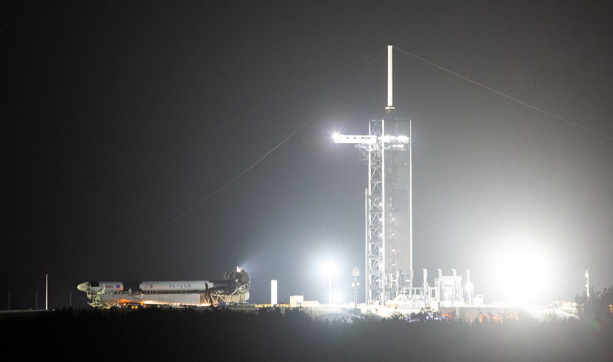

Apollo 与高盛宣布为 SpaceX 完成约 440 亿美元高级及次级票据定价，用于购买 GPU 及相关设备：称将为 SpaceX 地面算力建设交付英伟达下一代 Vera Rubin 芯片，并称这是迄今规模最大的 GPU 融资；租赁安排预计在 2027 年上半年设备交付后开始

.jpg){kind=link}
Apollo（纽约证券交易所代码：APO）与高盛（纽约证券交易所代码：GS）于 2026 年 11 月 20 日宣布，已成功完成约 440 亿美元高级及次级票据的定价，用于为 SpaceX（纳斯达克代码：SPCX）购买 GPU 及相关设备。新闻稿称，因投资者需求强劲，该交易获超额认购并上调规模；将为 SpaceX 的地面算力建设交付英伟达下一代 Vera Rubin 芯片，并称这是迄今已完成的规模最大的 GPU 融资。租赁安排预计在 2027 年上半年 GPU 及相关设备交付后开始。
SpaceX 是全球最有雄心的算力建设者之一，我们很高兴能与高盛一道主导此次融资。
新闻稿援引 Apollo 合伙人 Jamshid Ehsani 的话说：“SpaceX is one of the most ambitious builders of compute in the world, and we are pleased to have led this financing alongside Goldman Sachs.”（SpaceX 是全球最有雄心的算力建设者之一，我们很高兴能与高盛一道主导此次融资。）Ehsani 还表示，该交易体现了 Apollo 一体化平台的优势，以及公司对具有下行保护的资产支持结构的关注。新闻稿写明，融资由 Apollo 与高盛管理的基金及关联方承诺提供，BlackRock、Goldman Sachs Asset Management 管理的基金与账户，以及由 KKR 提供咨询的资本账户担任此次交易的锚定义务人（anchor commitments）。Apollo Global Securities 与高盛担任联合全球协调人（Co-Global Coordinators），高盛同时担任独家结构安排人（Sole Structuring Agent）。
新闻稿还列明：Apollo 在该交易中的顾问为摩根士丹利、花旗和 PJT Partners；Latham & Watkins LLP 担任 Apollo 的法律顾问；Paul, Weiss, Rifkind, Wharton & Garrison LLP 担任投资者法律顾问。稿件发布于美国东部时间 2026 年 11 月 20 日上午 11:02。
摘记，不是官方媒体。「迄今规模最大的 GPU 融资」等表述转述 Apollo 与高盛 11 月 20 日新闻稿。票据的具体档次、利率、交割与最终规模以相关法律文件为准，本稿未独立核对。